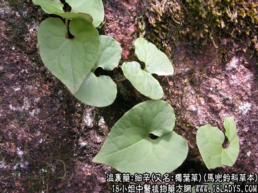

【中药概述】
细辛(又名:独叶草)为马兜铃科草本植物北细辛的全草。辛、温。归肺、肾经。
1．散寒解表：用于素体阳虚，感冒风寒，而见恶寒发热、寒重热轻、身倦欲卧，如（伤寒论<麻黄附子细辛汤>）、<九味羌活汤>。
2．祛风止痛：用于风湿痹痛（风湿性关节炎），可与桂枝，附子，麻黄等同用；头风头痛，可与川芎，白芷等同用；风冷齿痛，可与藁本，白芷等同用。
3．温肺化饮：用于肺寒咳喘，痰多清稀，能温肺化饮，如（伤寒论<小青龙汤>）。
【药效鉴别】
本品温而辛烈，外能发散风寒而止痛，内能温化寒痰水饮。为治风寒所致的痛证和寒痰喘咳的要药。
【药理作用】
浸剂有浸润麻醉和降血压的作用，但煎剂能升高血压而无麻醉之效。细辛挥发油有解热，表面麻痹的作用。对溶血性链球菌、伤寒杆菌、结核杆菌有抑制作用。
【化学成分】
含挥发油，为甲基丁香油酚及黄樟醚等。
【用量用法】
1——3g，水煎服。外用适量，可研末吹鼻或外敷。
【使用注意】
阴虚阳亢头痛者忌。10g以上会出现不良反应（中毒）。本品反藜芦（诸参辛芍叛藜芦）。